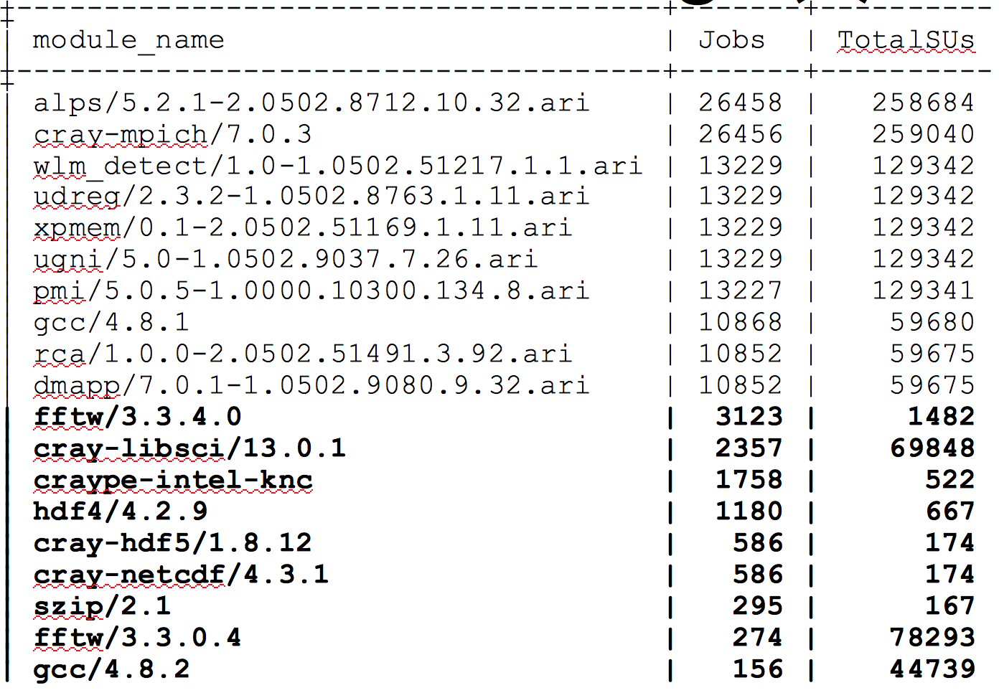

Data Mining¶
Module File Usage¶
Example:
mysql>
SELECT xalt_object.module_name,
count(xalt_run.date) AS Jobs,
ROUND(SUM(run_time*num_cores)/3600) as TotalSUs FROM xalt_run,
xalt_link, join_link_object, xalt_object
WHERE xalt_run.syshost='darter’
AND xalt_object.module_name is NOT NULL
AND xalt_run.uuid = xalt_link.uuid
AND xalt_link.link_id = join_link_object.link_id
AND join_link_object.obj_id = xalt_object.obj_id
AND xalt_run.date >= '2014-11-01’ AND xalt_run.date <= '2014-11-09’
GROUP BY xalt_object.module_name ORDER BY Jobs DESC;
Result
How to put in images - reference
{kind=link}
SQL - from the manual - based on pulling information from darter
This query will return a report first sorted in descending order the most used libraries (objects) for a specified machine based on number of times it appears in a link:
mysql> SELECT object_path, module_name, count(date) AS cnt from
xalt_link, join_link_object, xalt_object where build_syshost='darter'
AND xalt_link.link_id = join_link_object.link_id AND
join_link_object.obj_id = xalt_object.obj_id GROUP BY object_path
ORDER BY cnt DESC;
Occurrences of the modulefile name:
mysql> SELECT module_name, count(date) AS cnt from xalt_link,
join_link_object, xalt_object where build_syshost='darter' AND
xalt_link.link_id = join_link_object.link_id AND
join_link_object.obj_id = xalt_object.obj_id GROUP BY module_name
ORDER BY cnt DESC;
Occurrences of the modulefile name without NULL module_name entries included:
mysql> SELECT module_name, count(date) AS cnt from xalt_link,
join_link_object, xalt_object where build_syshost='darter' AND
module_name is not NULL AND xalt_link.link_id =
join_link_object.link_id AND join_link_object.obj_id =
xalt_object.obj_id GROUP BY module_name ORDER BY cnt DESC;
Report of modulefile usage based on shared library usage at run time ordered by number of occurrences used:
mysql> SELECT xalt_object.module_name, count(date) AS Jobs,
ROUND(SUM(run_time*num_cores)/3600) as TotalSUs from xalt_run,
join_run_object, xalt_object where xalt_run.syshost='mars' AND
xalt_object.module_name is NOT NULL AND xalt_run.run_id =
join_run_object.run_id AND join_run_object.obj_id =
xalt_object.obj_id AND date >= '20141101' AND date <= '20141109'
GROUP BY xalt_object.module_name ORDER BY Jobs DESC;
Counts of the module files based on static library usage at runtime:
mysql> SELECT xalt_object.module_name, count(xalt_run.date) AS Jobs,
ROUND(SUM(run_time*num_cores)/3600) as TotalSUs from xalt_run,
xalt_link, join_link_object, xalt_object where
xalt_run.syshost='darter' AND xalt_object.module_name is NOT NULL AND
xalt_run.uuid = xalt_link.uuid AND xalt_link.link_id =
join_link_object.link_id AND join_link_object.obj_id =
xalt_object.obj_id AND xalt_run.date >= '20141101' AND
xalt_run.date <= '20141109' GROUP BY xalt_object.module_name ORDER
BY Jobs DESC;